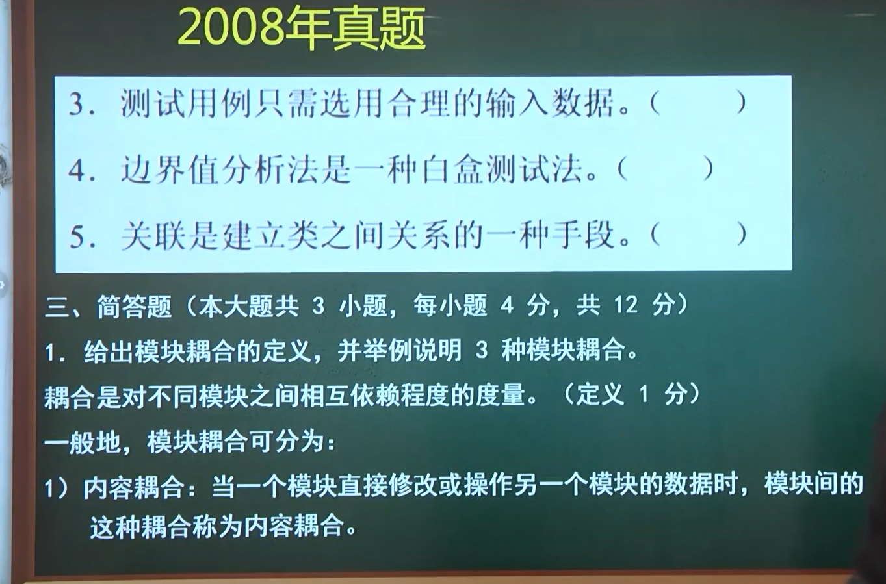
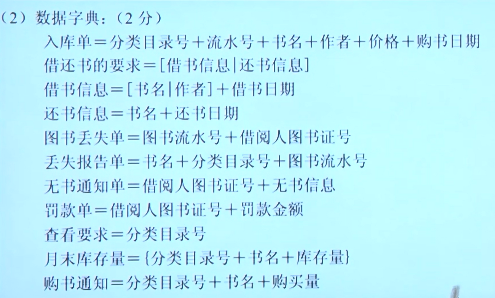
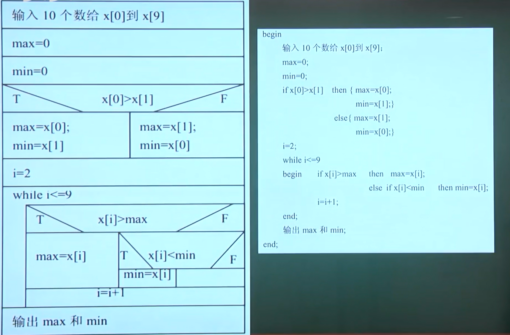
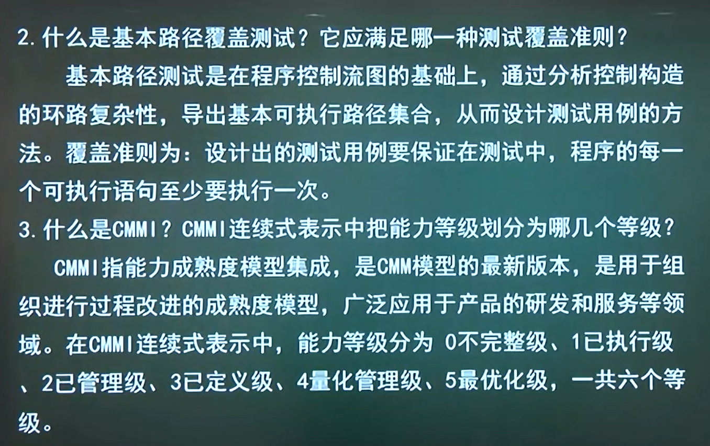

1
一开始得到初始结构图,然后根据高内聚低耦合来形成优化的结构图
模块的算法是详细设计部分
程序编码是实现部分
自顶向下的思想在数据流图和数据流图转模块化结构图时有体现
直接修改是内容耦合,数据耦合是比较好的弱的耦合,传递的是基本类型的数据(简单类型而非数组结构体等)

测试用例既要有输入数据,也要有正确情况的输出数据
白盒测试是 路径测试、条件测试、语句测试、分支测试等
边界值分析法、等价类分析法、事务流分析法是黑盒测试的内容


喷泉模型是面向对象的模型
路径覆盖最强,但是在大程序中难以实现,最弱的是语句覆盖
软件的正确性是指软件正确对应(达成)用户的正确需求
两个模块依赖同一个数据结构(放在公共领域内)是公共耦合,如果该表是通过指针的方式传递的数据结构(公共参数,没有声明在全局),则是标记耦合

组合(人和大脑),生命周期一致
聚合(公司和公司的律师),生命周期不一致


2
算法的描述是详细设计阶段的
黑盒测试才是针对功能的测试
聚合关系: 整体和部分
泛化关系: 父子关系(火车是运输工具的一种)
软件工程活动: 需求,分析,设计,实现,测试
软件过程是软件求解的,但不是计算逻辑
黑盒测试技术: 等价类划分,事务流划分,边界值分析法
从该年开始没有标准答案
增量模型适用于需求明确的情况
螺旋模型添加了风险分析
单元测试针对的是模块内部的程序
集成测试是将单元测试的每个阶段集成到一起去测试
有效性测试也叫确认测试/验收测试,发现程序是否和需求规约一致
质量保证是支持过程
CMM的初始成熟度等级不包含关键过程域
模块内聚和耦合,模块和信息隐蔽是结构化设计的内容
结构化分析方法建立的系统模型确实是数据流图,但是这位老师认为不止有数据流图,还有对数据流图的描述和加工的模型
3
通信内聚是内部各个处理访问共同数据项
逻辑内聚是功能上有相似性
功能内聚是比较紧密的高内聚,一个模块只负责一个功能
功能点度量和对象度量都是代码行度量的一种方法
软件需求管理不是开发活动(不是在定义、寻找需求),而是组织过程
集成测试是单元测试完成后的测试
需求规格说明书 -> 有效性测试,确认测试
DFD是数据流图,SD是变换型数据流图

网上找的10套
简答题
1、什么是软件工程？它目标和内容是什么？
- 软件工程就是用科学的知识和技术原理来定义，开发，维护软件的一门学科。
- 软件工程目标：付出较低开发成本；达到要求的功能；取得较好的性能；开发的软件易于移植；只需较低的维护费用；能按时完成开发任务，及时交付使用；开发的软件可靠性高。
- 软件工程内容：包括开发技术和开发管理两个方面。
2、软件开发中有哪几种过程模型？哪些适用于面向对象的软件开发？
软件开发中常见的软件过程模型有瀑布模型、原型模型、螺旋模型、喷泉模型、统一软件过程等。
其中喷泉模型、统一软件过程适用于面向对象的软件开发。
3、什么是结构分析方法？该方法使用什么描述工具？
结构化分析：简称SA，面向数据流进行数据分析的方法。采用自顶向下逐层分解的分析策略。顶层抽象地描述整个系统，底层具体地画出系统工程的每个细节。中间层则是从抽象到具体的过渡。使用数据流图，数据字典，作为描述工具，使用结构化语言，判定表，判定树描述加工逻辑。
4、什么是软件概要设计？该阶段的基本任务是什么？
把一个软件需求转换为软件表示时，首先设计出软件总的体系结构。称为概要设计或结构设计。
基本任务：
- ⑴设计软件系统结构
- ⑵进行数据结构及数据库的设计
- ⑶编写概要设计的文档
- ⑷评审
5、软件维护有哪些内容？
- 校正性维护。在软件交付使用后，一些隐含的错误在某些特定的使用环境下会暴露出来。为了识别和纠正错误，修改软件性能上的缺陷，应进行确定和修改错误的过程，这个过程就称为校正性维护。
- 适应性维护。为了使应用软件适应计算机硬件、软件环境及数据环境的不断发生的变化而修改软件的过程称为适应性维护。
- 完善性维护。为增加软件功能、增强软件性能、提高软件运行效率而进行的维护活动称为完善性维护。
- 预防性维护。为了提高软件的可维护性和可靠性而对软件进行的修改称为预防性维护。
6、软件测试要经过哪些步骤?这些测试与软件开发各阶段之间有什么关系?
- 软件测试要经过的步骤是：单元测试→集成测试→确认测试→系统测试。
- 单元测试: 对源程序中每一个程序单元进行测试，检查各个模块是否正确实现规定的功能，从而发现模块在编码中或算法中的错误。该阶段涉及编码和详细设计文档。
- 集成测试: 是为了检查与设计相关的软件体系结构的有关问题，也就是检查概要设计是否合理有效。
- 确认测试: 主要是检查已实现的软件是否满足需求规格说明书中确定了的各种需求。
- 系统测试: 是把已确认的软件与其他系统元素(如硬件、其他支持软件、数据、人工等)结合在一起进行测试。以确定软件是否可以支付使用。
7、什么是软件生存周期？它有哪几个活动？
- 软件生存周期：一个软件从提出开发要求开始直到该软件报废为止的整个时期。
- 包括：可行性分析和项目开发计划，需求分析，概要设计，详细设计，编码，测试，维护。
8、衡量模块独立性的两个标准是什么？各表示什么含义？
内聚和耦合。
- 内聚：又称为块内联系，指模块内部各成分之间相互关联的程度，以高内聚为设计目标。
- 耦合：也称块间联系，模块之间相互联系程度的度量，联系越紧密，耦合性越强，独立性越差，以低耦合为设计目标。
9、什么是结构分析方法？结构化分析方法通过哪些步骤来实现？
- 结构化分析：简称SA，面向数据流进行数据分析的方法。采用自顶向下逐层分解的分析策略。顶层抽象地描述整个系统，底层具体地画出系统工程的每个细节。中间层则是从抽象到具体的过渡。
- 实现的步骤：⑴了解当前系统的工作流程，获得当前系统的物理模型。 ⑵抽象出当前系统的逻辑模型。 ⑶建立目标系统的逻辑模型。 ⑷作进一步补充和优化。
10、什么是需求分析？需求分析阶段的基本任务是什么？
需求分析：开发人员准确地理解用户的要求，进行细致的调查分析，将用户非形式的需求陈述转化为完整的需求定义，再由需求定义转换到相应的需求规格说明的过程。
基本任务：
- ⑴问题识别
- ⑵分析与综合，导出软件的逻辑模型
- ⑶编写文档
11、什么样是”事物流”？什么是”变换流”？
- 数据流图（DFD）一般可分为”变换流”，”事物流”两种。
- ̶变换流”：由输入﹑输出﹑变换（或称处理）三部分组成，是一顺序结构。
̶- 事物流”：它的某个加工，分离成许多发散的数据流，形成许多加工路径，并且根据输入值选择其中一个路径来执行。（这人加工称为事务处理中心）
12、单元测试有哪些内容?
单元测试主要针对模块的以下五个基本特征进行测试：
- (1)模块接口
- (2)局部数据结构
- (3)重要的执行路径
- (4)错误处理
- (5)边界条件
13、什么是软件生存周期模型？有哪些主要模型？
生存周期模型：描述软件开发过程中各种活动如何执行的模型。对软件开发提供强有力的支持，为开发过程中的活动提供统一的政策保证，为参与开发的人员提供帮助和指导，是软件生存周期模型化技术的基础，也是建立软件开发环境的核心。
主要有：瀑布模型，增量模型，螺旋模型，喷泉模型，基于知识的模型，变换模型。
14、软件设计的基本原理包括哪些内容？
- ⑴模块化：模块是软件的组成部分，是具有独立功能且可命名的一段程序，所有模块组成整体，可以满足问题的要求。
- ⑵抽象：认识复杂现象过程所使用权的工具，只考虑事物本质的共同特性，忽略细节和其它因素。通过抽象确定组成软件的过程实体。
- ⑶信息隐蔽：将模块实现自身功能的细节与数据”隐蔽”起来。模块间仅交换为完成系统功能所必须的信息。
- ⑷模块独立性：每个模块只完成系统要求的独立的子功能。
15、结构化程序设计的基本要点是什么?
主要有三个：
- 采用自顶向下、逐步求精的程序设计方法
- 使用三种基本控制结构构造程序。任何程序都可以由顺序、选择、重复(循环)三种基本控制结构构造，这三种基本结构的共同点是单入口、单出口。
- 主程序员组的组织形式。
16、详细设计有哪几种描述方法？
详细设计的描述方法有图形、表格和语言，其中图形常用结构化程序流程图、盒图和PAD(问题分析图)为描述工具，语言常用过程设计语言(PDL)来作为工具。
17、单元测试中采用什么方法?
测试的方法是为被测试模块编写驱动模块和桩模块来实现被测试单元的可运行。通过驱动模块来模拟被测试模块的上级调用模块，以上级模块调用被测模块的格式驱动被测模块，接收被测模块的测试结构并输出。桩模块则用来代替被测试模块所调用的模块。它的作用是返回被测模块所需的信息。
18、什么是软件配置管理?什么是基线?
- 软件配置管理，简称SCM(Software Configuration Management)，是指一组管理整个软件生存期各阶段中变更的活动。软件配置管理技术可以使软件变更所产生的错误达到最小并最有效地提高生产率。
- 基线：是软件生存期中各开发阶段的一个特定点，它的作用是把开发各阶段工作的划分更加明确化，使本来连续的工作在这些点上断开，以便于检查与肯定阶段成果。
19、简述文档在软件工程中的作用？
文档在软件工程中的作用如下：
- (1)提高软件开发过程的能见度
- (2)提高开发效率
- (3)作为开发人员阶段工作成果和结束标志
- (4)记录开发过程的有关信息便于使用与维护；
- (5)提供软件运行、维护和培训有关资料；
- (6)便于用户了解软件功能、性能。
20、软件工程三要素之间的关系？
- 软件质量是软件工程的生命线，软件工程以质量保证为基础。
- 质量管理促进了过程的改进，创造了许多行之有效的软件开发方法和工具。
- 软件工程釆用层次化的方法，每个层次都包括过程、方法、工具三要素。
- 方法支撑过程和工具，过程和工具又促进方法学的研究。
21、说明面向对象的特征？
面向对象的特征是：
- (1)对象唯一性。每个对象都有自身唯一的标识，在对象生存期中，其标识不变，不同的对象不能有不同的标识。
- (2)分类性。是指将具有一致的数据结构(属性)和行为(操作)的对象抽象成类
- (3)继承性。是子类自动共享父类数据结构和方法的机制，这是类之间的一种关系。
- (4)多态性。是指相同的操作或函数过程可以作用于多种类型的对象上并获得不同的结果。
22、简述”变换分析”设计步骤。
- ⑴确定变换中心，逻辑输入和输出。
- ⑵设计软件结构的顶层和第一层–变换结构。
- ⑶设计中﹑下层模块，对第一层的模块自顶向下分解。
- ⑷设计的优化 ：输入部分求精，每个物理输入设置专门模块，以体现系统的外部接口。其它输入模块与转换数据模块都很简单时，可将它们合并。
23、请简述可行性研究有哪些步骤？
- 复查系统规模和目标；
- 研究当前的系统；
- 导出新系统的高层逻辑模型；
- 重新定义问题；
- 导出和评价可供选择的解决方案；
- 推荐可行的行动方案；
- 草拟开发计划；
- 书写文档并提交审查。
24、请简述黑盒测试和白盒测试有何区别，黑盒测试有哪些常用方法？
- 黑盒测试和白盒测试的区别：前者基于功能，后者基于结构；
- 黑盒测试常用方法有：边界值、等价类、因果图、错误推测法等。
25、什么是软件可维护性？常见的软件维护活动有哪几类？
- 软件可维护性的定义：软件能够被理解、校正、适应及增强功能的容易程度；
- 常见的软件维护活动有：改正型、适应型、完善型、预防型。
26、CMM全称是什么?分为哪几个级别？
- CMM全称是软件能力成熟度模型；
- 从无序到有序的进化分成5个级别，分别为：
- 初始级；
- 可重复级；
- 已定义级；
- 已管理级；
- 优化级。
27、什么是数据字典?简述数据字典与数据流图的关系。
数据字典是关于数据的信息的集合，对数据流程图中的各个元素做完整的定义与说明，是数据流程图的补充工具；
数据字典与数据流图的关系：数据流图和数据字典共同构成系统的逻辑模型，没有数据字典数据流图就不严格，然而没有数据流图数据字典也难于发挥作用。 数据流图和对数据流图中每个元素的精确定义放在一起，才能共同构成系统的规格说明。
28、软件生命周期划分为哪几个阶段？
- 软件生命周期分为三个时期八个阶段：
- 软件定义：问题定义、可行性研究；
- 软件开发：需求分析、概要设计、详细设计、编码、测试；
- 软件运行：软件维护
29、简述三种面向对象模型的主要功能？
- ①对象模型：表示了静态的结构化的系统数据性质，描绘了系统的静态结构，从客观世界实体的对象关系角度来描绘对象。
- ②动态模型：该模型描述了系统的控制结构，它表示了瞬间的、行为化的系统控制性质，它关心的是系统的控制及操作的执行顺序，它从对象的事件和状态的角度出发，表现了对象的交互行为。
- ③功能模型：表示变化的系统“功能”性质，它指明系统应该“做什么”，因此功能模型更直接的反映了用户对目标系统的要求。
30、详细设计的基本任务是什么？
详细设计的基本任务包括：为每个模块进行详细的算法设计；为模块内的数据结构进行设计；对数据库进行物理设计；其他设计；编写详细设计说明书；评审。
31、黑盒测试和白盒测试有什么区别？
- （1）黑盒测试法: 把程序看作一个黑盒子，完全不考虑程序的内部结构和处理过程。它只检查程序功能是否能按照规格说明书的规定正常使用，程序是否能适当地接收输入数据并产生正确的输出信息，程序运行过程中能否保持外部信息的完整性。黑盒测试又称为功能测试，包含等价类划分法、边界值法、错误推测法、因果图法等。
- （2）白盒测试法: 是把程序看成装在一个透明的白盒子里，测试者完全知道程序的结构和处理算法。这种方法按照程序内部的逻辑测试程序，检测程序中的主要执行通路是否都能按预定要求正确工作。白盒测试又称为结构测试，包含逻辑覆盖法和基本路径测试法。
32、什么是软件工程？软件工程面临的问题是什么？
- 软件工程就是用科学的知识和技术原理来定义，开发，维护软件的一门学科。
- 软件工程面临的问题：软件的费用，可靠性，可维护性，软件生产率和软件的重用。
33、软件工程三要素之间的关系？
- 软件质量是软件工程的生命线，软件工程以质量保证为基础。
- 质量管理促进了过程的改进，创造了许多行之有效的软件开发方法和工具。
- 软件工程釆用层次化的方法，每个层次都包括过程、方法、工具三要素。
- 方法支撑过程和工具，过程和工具又促进方法学的研究。
34、简述结构化程序设计方法的基本要点。
- (1)采用自顶向下，逐步求精的程序设计方法。
- (2)使用三种基本控制结构构造程序，分别是顺序，选择和循环
- (3)采用主程序员组的组织形式。
35、顾客在自动柜员机中插入银行卡，执行提款的服务项目；银行职员要求自动柜员机打印所有的提款数据。画出自动柜员机的Use Case图。？
36、简述提高可维护性的方法。
- (1)建立明确的软件质量目标；
- (2)利用先进的软件开发技术和工具；
- (3)建立明确的质量保证工作；
- (4)选择可维护的程序设计语言；
- (5)改进程序文档。
37、简述文档在软件工程中的作用。
- (1)提高软件开发过程的能见度；
- (2)提高开发效率；
- (3)作为开发人员阶段工作成果和结束标志；
- (4)记录开发过程的有关信息便于使用与维护；
- (5)提供软件运行、维护和培训有关资料；
- (6)便于用户了解软件功能、性能。
38、什么是软件危机？产生原因是什么？
软件开发技术的进步未能满足发展的要求。在软件开发中遇到的问题找不到解决的办法，问题积累起来，形态尖锐的矛盾，导致了软件危机。
产生原因：
- ⑴ 软件规模越来越大，结构越来越复杂。
- ⑵ 软件开发管理困难而复杂。
- ⑶ 软件包开发费用不断增加。
- ⑷ 软件开发技术落后。
- ⑸ 生产方式落后，仍采用手工方式。
- ⑹ 开发工具落后，生产率提高缓慢。
39、调试的目的是什么?调试有哪些技术手段?
调试则是在进行了成功的测试之后才开始的工作。调试的目的是确定错误的原因和位置，并改正错误，因此调试也称为纠错(Debug)。调试的技术手段有简单的调试方法、归纳法、演绎法和回溯法等。
40、在传统软件工程方法指导下，数据流图和数据字典的关系如何？
数据字典是关于数据的信息的集合，对数据流程图中的各个元素做完整的定义与说明，是数据流程图的补充工具。
数据流图和数据字典共同构成系统的逻辑模型，没有数据字典数据流图就不严格，然而没有数据流图数据字典也难于发挥作用。 数据流图和对数据流图中每个元素的精确定义放在一起，才能共同构成系统的规格说明
各阶段图形
- 可行性分析: 系统流程图,数据流图DFD,数据字典
- 需求分析: 层次方框图,Warnier图,IPO图 (实体联系图(ER图),状态转换图,层次方框图,warnier图,IPO图,数据流图)
- 总体设计/概要设计: 层次图,IPO图,HIPO图,结构图,数据流
- 详细设计: 系统流程图,盒图(N-S图),PAD图,判定树,判定表,过程设计语言
环形复杂度: = 封闭区域个数(最外圈也算一个) = 边数-节点数+2
线性独立路径基本集合: 每个新路径都在之前走过的节点上多一个新的节点